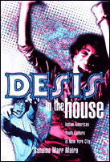

<body bgcolor="#FFFFFF" text="#000000" link="#0000FF" vlink="#CC0000" alink="#CC0000"><center><hr width="350" size="1" align="center" noshade>Making the desi scene in New York<hr width="350" size="1" align="center" noshade><p><a href="https://cdcshoppingcart.uchicago.edu/Cart/ChicagoBook.aspx?ISBN=9781566399265&&PRESS=temple" target="_top">Buy this book!</a> | <a href="https://cdcshoppingcart.uchicago.edu/Cart/Cart.aspx?PRESS=temple" target="_top">View Cart</a> | <a href="https://cdcshoppingcart.uchicago.edu/Cart/Cart.aspx?PRESS=temple" target="_top">Check Out</a></p><p></p></center><!--none//--><h1>Desis in the House</h1>
<H2>Indian American Youth Culture in New York City</H2>
<H2><!-- [note middle name] --></H2>
<h3>Sunaina Marr Maira</h3>
<P>cloth 1-56639-926-2 $80.50, Feb 02, <FONT COLOR=#990033>Available</FONT>
<br>paper 1-56639-927-0 $27.95, Feb 02, <FONT COLOR=#990033>Available</FONT>
<br>Electronic Book 1-43990-673-4 $27.95 <FONT COLOR=#990033>Available</FONT>
<BR> 256 pp
6x9
16&nbsp;halftones
</P><h3 align="center"><P><font color="#996633">Honorable Mention for the Lora Romero First Book Publication Prize from the American Studies Association,
2003</font></P>
</H3>
<BLOCKQUOTE><I>"</I>Desis in the House<I> is what cultural studies ought to be. Sunaina Maira gets deep inside of the social and cultural worlds of second generation Indian Americans and illuminates the links between the local and global, history and nostalgia, nationalism and cosmopolitanism. Maira's perceptive insights into the complex and fluid styles, music, dances, desires and dreams of desi youth will force us all to think about cultural identities in new ways."</I>
<br>&#151<b>Robin D. G. Kelley</b>, author of <I>Yo' Mama's DisFunktional! Fighting the Culture Wars in Urban America</I><I></I></BLOCKQUOTE>
<p>She sports a nose-ring and duppata (a scarf worn by South Asian women) along with the latest fashion in slinky club wear; he's decked out in Tommy gear. Their moves on the crowded dance floor, blending Indian film dance with break-dancing, attract no particular attention. They are just two of the hundreds of hip young people who flock to the desi (i.e., South Asian) party scene that flourishes in the Big Apple.
<p>New York City, long the destination for immigrants and migrants, today is home to the largest Indian American population in the United States. Coming of age in a city remarkable for its diversity and cultural innovation, Indian American and other South Asian youth draw on their ethnic traditions and the city's resources to create a vibrant subculture. Some of the city's hottest clubs host regular bhangra parties, weekly events where young South Asians congregate to dance to music that mixes rap beats with Hindi film music, bhangra (North Indian and Pakistani in origin), reggae, techno, and other popular styles. Many of these young people also are active in community and campus organizations that stage performances of "ethnic cultures."
<p>In this book Sunaina Maira explores the world of second-generation Indian American youth to learn how they manage the contradictions of gender roles and sexuality, how they handle their "model minority" status and expectations for class mobility in a society that still racializes everyone in terms of black or white. Maira's deft analysis illuminates the ways in which these young people bridge ethnic authenticity and American "cool."
<BR>&nbsp;<h2>Excerpt</h2><P>Excerpt available at <a href="http://www.temple.edu/tempress">www.temple.edu/tempress</a></p>
<BR>&nbsp;<h2>Reviews</h2>
<p><I>"Sunaina Maira guides us into the bog of nostalgia where beleaguered immigrants of color forge a memory that is at odds with their homeland, but also with the dreams of their home boys and home girls. An honest ethnography gives us ample evidence that nostalgia is a feint. Rather than leave us with this conclusion alone, Maira posits something called critical nostalgia, and you'll find out what that is when you read this important book."</I>
<br>&#151<b>Vijay Prashad</b>, author of <I>Everybody Was Kung Fu Fighting: Afro-Asian Connections and the Myth of Cultural Purity</I>
<p><I>"Finally, an entertaining study of a second generation immigrant youth group that exposes all that goes on behind U.S. black and white racial and national imagery. A brilliant behind the scenes look that shows how immigrant youth's struggles of what's cool, authentic and fun are really about the reconstitution of racial, class and gender identities."</I>
<br>&#151<b>Arlene Davila</b>, anthropology and American studies, New York University, and author of <I>Latinos Inc.: The Marketing and Making of a People</I> and <I><a href="1340_reg.html" target="_top">Sponsored Identities</a></I> (Temple)
<p><I>"In Sunaina Maira's smart, hip ethnography of the Manhattan scene, Indian American youth perform and transgress remix anxieties and traditions of race, ethnicity, gender, sexuality, and nation. Her beat is cool, hot, irresistible."</I>
<br>&#151<b>Gary Y. Okihiro</b>, author of <I>Common Ground: Reimagining American History</I>
<p><i>"Maira offers a compelling comparative analysis of white mainstream appropriation and commodification of Indian cultural forms and practices and of the desi's cultural mixing of music, dance, and attire."</i>
<br>&#151<b><i>South Asian Review</i></b>
<p><i>"In this thorough academic study, Maira explores the cultural dynamics found among Desis, second generation Sough Asian American youth....Through interviews with Indian Americans, Maira attempts to discover the deeper meaning that this remix music has for young South Asian Americans and the role it plays in helping them to define their ethnic identity and gender relationships. Well researched and perceptive."</i>
<br>&#151<b><i>Library Journal</i></b>
<p><i>"This lively book is hard to set down. It is a powerful study of second-generation Indian-American youth growing up in New York City in the mid-1990s."</i>
<br>&#151<b><i>MultiCultural Review</i></b>
<p><i>"</i>Desis in the House<i> presents a nuanced, poignant look at the contradictions that second-generation youths of color have to confront and is particularly valuable for demonstrating the inadequacy of current categories and theoretical perspectives for analyzing their dilemmas."</i>
<br>&#151<b><i>The American Journal of Sociology</i></b>
<p>Read a <a href="../authors/1522_review.pdf">review</a> from <I>JAAS</I>, Volume 5.3 (October 2002), written by Shilpa Dave (pdf).
<BR>&nbsp;<h2>Contents</h2><P>
<p>Acknowledgments
<br>1. Introduction
<br>2. To Be Young, Brown, and Hip: Race, Gender, and Sexuality in Indian American Youth Culture
<br>3. Nostalgia: ideology and Performance
<br>4. Chaste identities: The Eroticization of Nostalgia
<br>5. Conclusion: Critical Nostalgia and Commodified Cool
<br>Appendix: Notes on Research Methods
<br>Notes
<br>References
<br>Index
</P><BR>&nbsp;<H2>About the Author(s)</H2>
<table><tr><td valign="top"><img src="/tempress/authors/1522_au.gif" height="90" width="75"></td><td width="100%" valign="middle"><p><b>Sunaina Marr Maira</b> is Assistant Professor of Asian American Studies in the English and Anthropology Departments at the University of Massachusetts, Amherst; she is the co-editor of <I>Contours of the Heart: South Asians Map North America</I>, recipient of the Before Columbus Foundation's American Book Award in 1997. Her short fiction has appeared in literary journals and anthologies.</P></td></tr></table>
<BR><H2>Subject Categories</H2>
<p><A HREF="/tempress/asian_amer.html" TARGET="_top">Asian American Studies</a>
<BR><A HREF="/tempress/american.html" TARGET="_top">American Studies</a>
<BR><A HREF="/tempress/race.html" TARGET="_top">Race and Ethnicity</a>
</p>
<BR><h2 class="inpageheading">In the series</H2>
<P><I><a href="http://www.temple.edu/tempress/asam_history.html" onMouseOver="window.status='Click for other books in this series!'; return true;" onMouseOut="window.status=''; return true;" target="_top">Asian American History and Culture</a></i>, edited by K. Scott Wong, Linda Trinh V�, and Cathy Schlund-Vials.
</p><p>Founded by Sucheng Chan in 1991, the <I>Asian American History and Culture</I>, series has sponsored innovative scholarship that has redefined, expanded, and advanced the field of Asian American studies while strengthening its links to related areas of scholarly inquiry and engaged critique. Like the field from which it emerged, the series remains rooted in the social sciences and humanities, encompassing multiple regions, formations, communities, and identities. Extending the vision of founding editor Sucheng Chan and emeriti editor Michael Omi and David Palumbo-Liu, series editors K. Scott Wong, Linda Trinh V�, and Cathy Schlund-Vials continue to develop a foundational collection that embodies a range of theoretical and methodological approaches to Asian American studies.</p>
<p align="center"><a href="https://cdcshoppingcart.uchicago.edu/Cart/ChicagoBook.aspx?ISBN=9781566399265&&PRESS=temple" target="_top">Buy this book!</a> | <a href="https://cdcshoppingcart.uchicago.edu/Cart/Cart.aspx?PRESS=temple" target="_top">View Cart</a> | <a href="https://cdcshoppingcart.uchicago.edu/Cart/Cart.aspx?PRESS=temple" target="_top">Check Out</a></p><p><font face="Arial" size="1"><a href="copyright.html" onMouseOver="window.status='Web Copyright Policy';return true;" onMouseOut="window.status=''" title="Web Copyright Policy">&copy;</a> 2015 <a href="http://www.temple.edu" target="new" onMouseOver="window.status='Link to Temple University home page';return true;" onMouseOut="window.status=''" title="Link to Temple University home page">Temple University</a>. All Rights Reserved. http://www.temple.edu/tempress/titles/1522_reg.html</font></p>